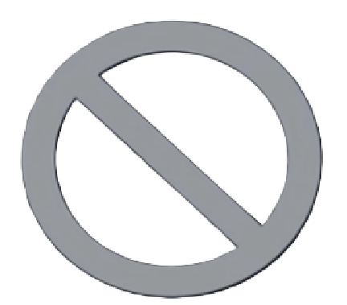
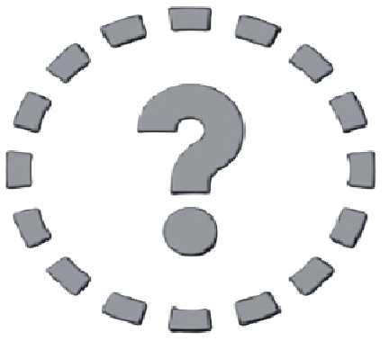
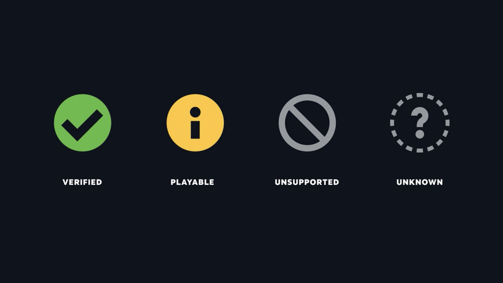
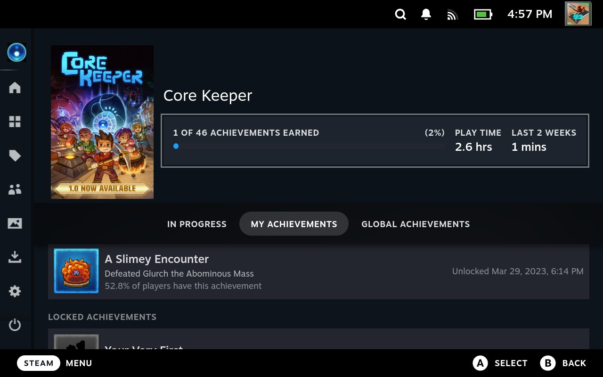

5. Games and the Steam Library
5.1 Verified Status
Before you purchase and/or install a game onto the Steam Deck, it is important to know about a term called .
When a game's compatibility is considered that means that the experience of playing it on the Steam Deck meets certain standards.
Verified Games have a  next to their name to show that:
next to their name to show that:
- They have all of their functionality accessible when using the default controller configuration
- They show Steam Deck controller icons
- Their in-game interface text is legible on the Steam Deck
- Their default graphics configuration performs well on the Steam Deck
Some games are trickier to play because of their controls or the interface is hard to read. These games are not Verified, but considered and are indicated with this symbol:
Some games are too difficult to play on the Steam Deck, and so these are called and are indicated by this symbol:
If a game has a  that means Steam has not gotten enough data yet to determine a game's Verified status. The compatibility of these games is considered .
Steam utilizes its users' input to evaluate if games are easily playable and worthy of the Verified status. Occasionally, when closing a game, the Steam Deck will ask you if your experience with it matches whether it is Verified, Playable, or Unsupported.
Figure 5.1: Steam Deck Compatibility Icons
5.2 Installing Games
To install a game from your :
- Click the button.
- Go to .

Figure 5.2: Library Menu option in the Steam Menu.
- Select the game you wish to install.
- Select .
Figure 5.3: Install Button for the game, "Among Us."
Note:
If you have no games within your Steam Library, skip to Section 6.2 How to Buy a Game, for how to purchase a game.
5.3 Launching Games
Once you have downloaded and installed games, they will show up in the Steam Library.
To play a game, find it in the Steam Library.
Select to begin playing the game.

Figure 5.4: Play Game Button for the game, "Core Keeper."
5.4 Game Menu
Using the button when playing a game brings up the Steam Menu. If you select the title of the game from this menu, then you can access the overlay.

Figure 5.5: Game Menu overlay
Selecting the option will close this overlay.
Selecting will allow you to view the current for the game.
Figure 5.6: Default controller layout for the game, "Core Keeper."
Selecting at the bottom of the screen will let you edit the game's Control Layout, allowing you to change which button is bound to each action within the game.
Note:
For any game that isn't Verified, it can be helpful to check the within the game's section. This is where other players can create Control Layouts for games. Someone has probably created a layout for the game to make it more playable on the Steam Deck already, saving you time!
will take you to the for the current game. For more about this page, see Section 5.6: Game Page

Figure 5.7: Game Page for the game, "Core Keeper."
will allow you to see all of the Steam Achievements you currently have in the game. This is also where you can see how long you have played the current game.

Figure 5.8: Achievements for "Core Keeper."
will bring you to a list of guides from the Steam Community for the current game.

Figure 5.9: Steam Guides for the game, "Core Keeper."
allows you to write notes for yourself related to the current game. You can create multiple notes.
Figure 5.10: Notes for the game, "Core Keeper."
5.5 Navigating the Steam Library
As mentioned in 5.2 Installing Games above, to access the Steam Library:
- Click the button.
- Go to .
Figure 5.11: Accessing the Steam Library from the Steam Menu.
This will take you to the page of your Steam Library.
This is a section that lists only games that are Verified.

Figure 5.12: The Great on Deck section of the Steam Library.
To see all of your games, select the section within the Steam Library by pressing .
To go back to the left category within the Steam Library, press .
Figure 5.13: The All Games section of the Steam Library.
You can also quickly see all of your installed games by going to the section of the Steam Library.
If you have added games to , they appear in the section. If you have added any games to a , they will appear in their respective Collection within the Collections section. For more information on adding a game to a Favorites or a Collection, please see Section 5.6 Game Page.
The section within the Steam Library is for any games you have on your Steam Deck that you did not get through Steam.
The section is where any game soundtracks you have purchased as DLC (Downloadable Content) will appear.
The Steam Library is sorted alphabetically automatically. When navigating through your games, press and to move quickly between letters of the alphabet.
You can press to sort your games by other criteria, such as "Friends Playing," "Hours Played," "Last Played," etc.
Figure 5.14: Changing how the Steam Library is sorted.
You can press to filter out games based on criteria such as Verified status, how many players (i.e. single-player, multiplayer), play state, hardware support, features, genre, and if one of your friends plays the game.
Figure 5.15: The Library Filters menu.
5.6 Game Page
Selecting any game within your Steam Library brings you to its page within your Steam Deck.

Figure 5.16: The Game Info page for "Among Us."
The icon under the game's banner will take you to its , where you can change the for the game.
The icon will give you several more options:
- : allows you to move a game to the section of your Steam Library.
- : allows you to add your game to a new or existing of games.
- : allows you to this game or mark it as . Private allows you to keep others from seeing that you own it, when you're playing it, how long you've played it, etc.
- : allows you to get access more advanced options in managing the game
Figure 5.17: The Properties Menu for "Among Us".
The default section underneath the game's details is the section. From here, you can view your recent activity within the game. This allows you to post something about the game to your Steam Friends.
Also within this section, you can see a list of updates about the game from the developers.
The section of a game's page will show you all of your , and any you've written for the game. Information on how to write a Review on the Steam Deck is located in Section 6.7 How to Write a Review
Figure 5.18: The Your Stuff section for "Among Us."
The section will show you all Community Content for the game: guides, artwork, posts, etc.
The section shows you in-depth information about the game, such as developer, publish date, Steam Deck Compatability, number of capable players, and more. There are also tabs for the game's page on the and others.
Figure 5.19: The Game Info section for "Among Us."
Next Section
Back to Table of Contents